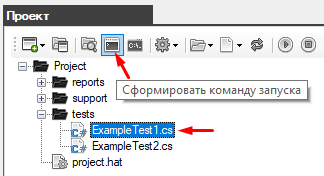
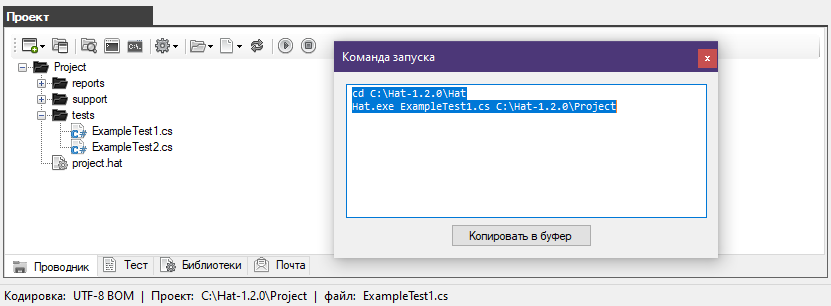
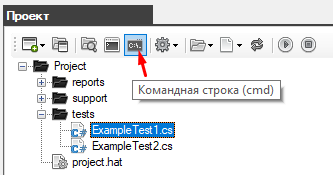
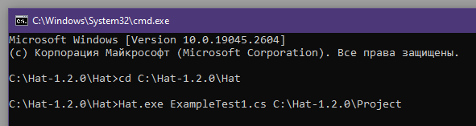
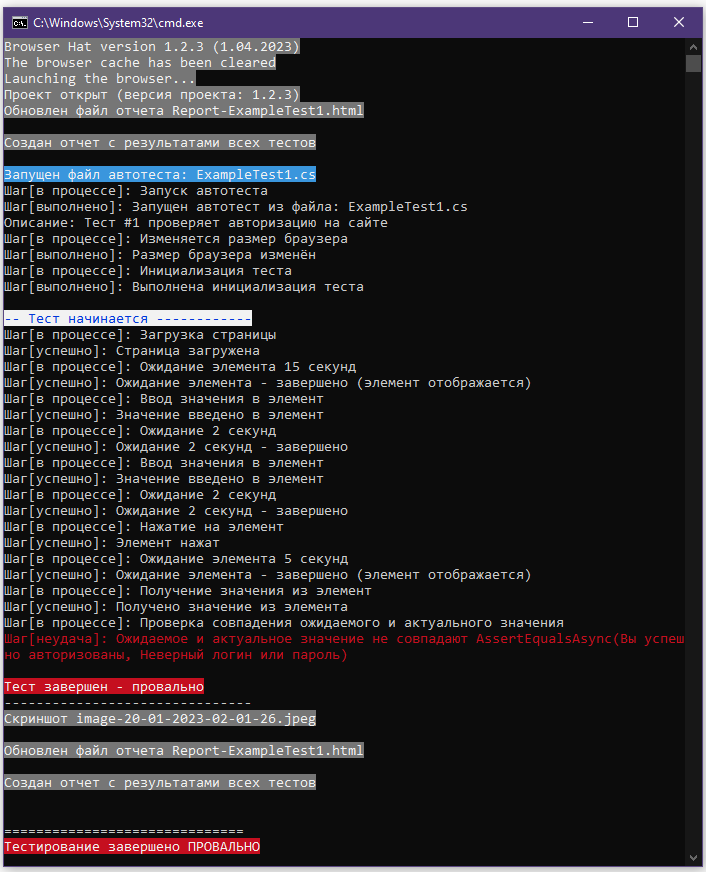

Запуск автотеста из командной строки
Чтобы запускать автотесты в популярных системах непрерывной интеграции нужно использовать командную строку Windows.

В окне "Проект" (на вкладке "Проводник") выберите файл автотеста который нужно запустить.
Затем на панели инструментов нажмите на кнопку "Сформировать командную строку"

В результате вам откроется окно с уже готовыми командами.

Синтаксис команды запуска:
Hat.exe [Имя_Файла_Автотеста] [Путь_К_Папке_С_Проектом]
Откройте командную строку

Используйте ранее полученные команды

Будет запущен автотест, при этом все шаги выполнения отразятся в консоли
В случае ошибки в шаге будет показан метод и его свойства при которых произошла ошибка.

В конце показан результат выполнения всего автотеста
Created with the Personal Edition of HelpNDoc: Produce electronic books easily